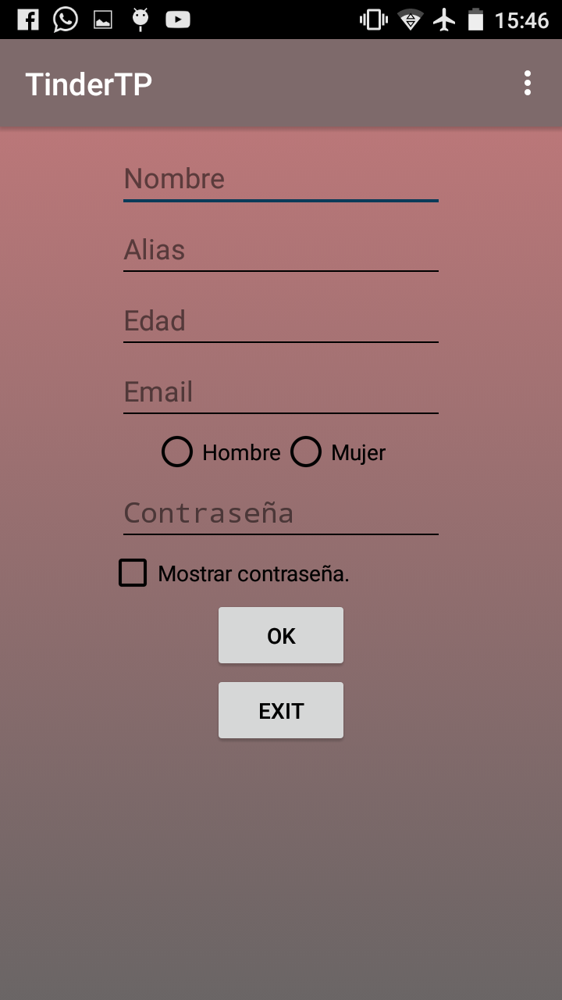
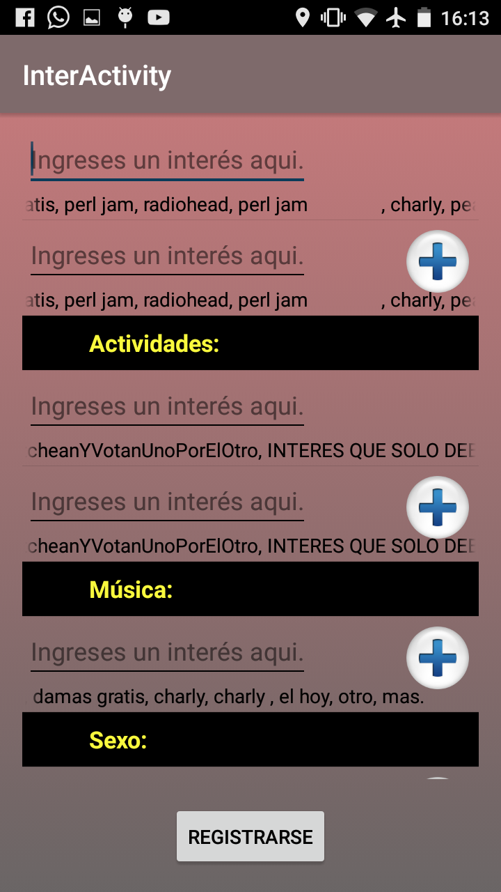
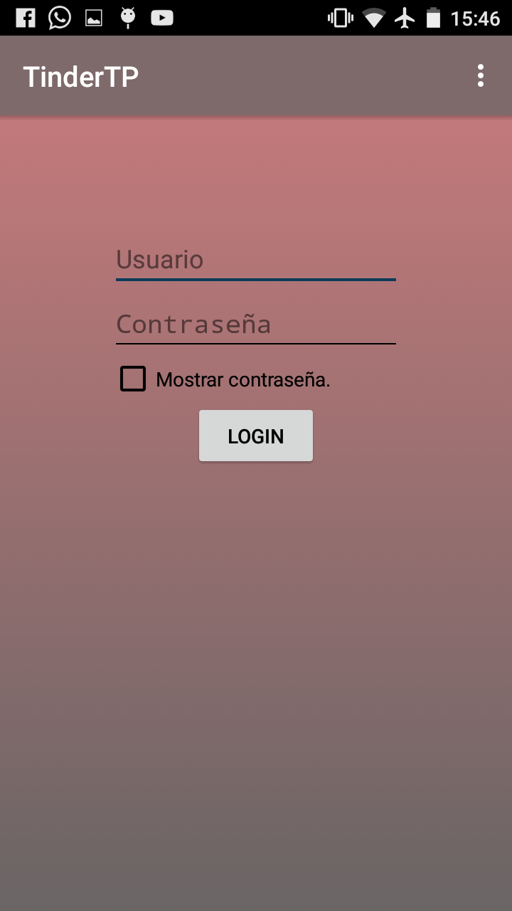

Manual de usuario (Android App)¶
- Se observará una pantalla inicial donde se hacen las conexiones de login si ya ha iniciado sesión previamente. Principalmente es una pantalla de carga .
- La siguiente pantalla es en la que se ingresa el ip:port correspondiente a la localización del App Server.
{kind=link}
- Se prosigue con la selección de modelo de ingreso a la aplicación. Si se desea registrar un nuevo usuario o ya hay uno existente:
{kind=link}
Registro:
3.1. Si se eligió Registrarse se ingresa en un pedido de datos básicos al usuario (nombre, email, alias, edad, sexo, contraseña).
{kind=link}
3.2. Luego se prosigue con el pedido de intereses, se puede agregar un nuevo interés o utilizar los sugeridos.
{kind=link}
3.3. Una vez llegado hasta aquí, ya se ha producido un nuevo usuario, con el cual de aquí en más se ingresa por medio de esta aplicación.
Login:
3.1. Si se eligió loguearse, ya que es un usuario viejo, se procede al pedido de contraseña y email del usuario.
{kind=link}
3.2. Una vez aquí se ha logueado el usuario.
- Con el usuario logueado o registrado, se ingresa en esta pantalla de matcheo de usuarios, donde se podrá:
Desde el icono Menú se puede acceder a:
- Edición de perfil: se puede borrar, cambiar, agregar valores a los intereses previstos, cambiar el nombre o el alias.
- Eliminación de perfil: ADVERTENCIA, no tiene vuelta atrás.
- Cambiar foto de perfil
- Settings:
- Logout: se eliminan los datos guardados.
- Si se clickea en el icono de mensajes o en el icono de matches, se ingresa en una lista con los usuarios que se han matcheado, con su imagen, nombre y ultimo mensaje si existiera.
{kind=link}
- Una vez clickeado un usuario específico para entablar una conversación, se ingresa en la pantalla de chat, donde se pueden intercambiar mensajes de texto y emoticones.
{kind=link}